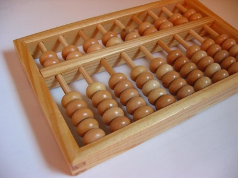
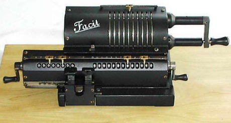
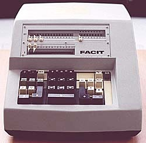
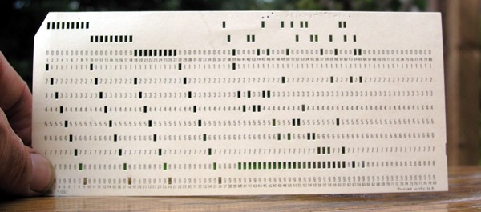
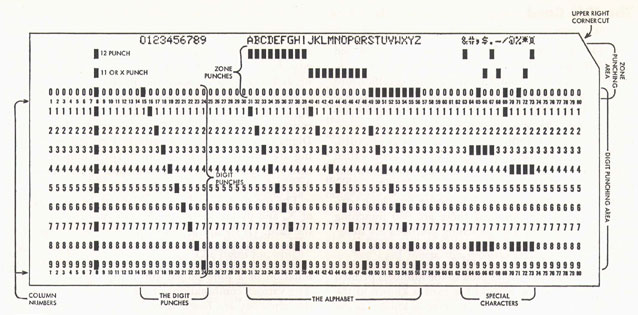
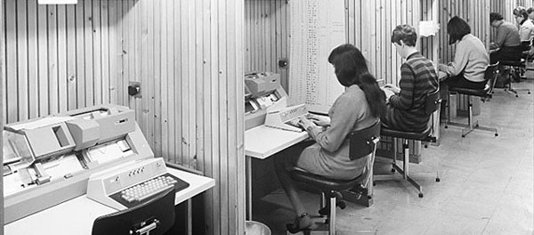
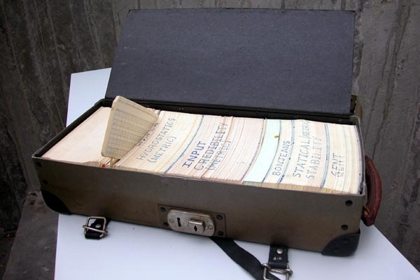
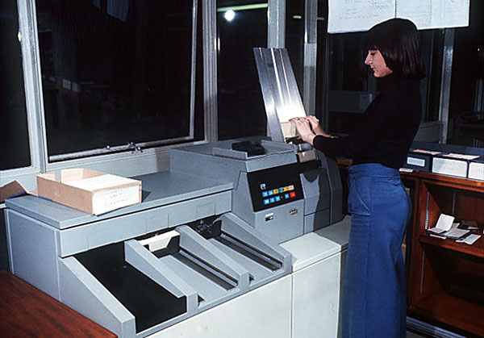
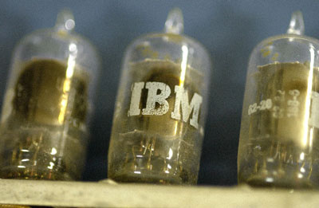

Not: Ýlk defa TurkCADCAM.net Dergisi 1. sayýsýnda (Ocak-Þubat 2006) yer alan bu makale, Mayýs 2008'de Erkut Neðiþ tarafýndan eklenen yeni resim, video ve linklerle birlikte TurkCADCAM.net Portalý'nda yayýnlanmaya baþlamýþtýr.
Özet
Bu makalede Bilgisayar Destekli Tasarým ve Ýmalatýn, yabancý dildeki kýsa adýyla CAD/CAM'in (Computer Aided Design/ Computer Aided Manufacturing) nasýl, neden ve kimler tarafýndan
baþlatýldýðý ve yazarýn bu konuda yurt dýþýnda ve ülkemizde ne tür çalýþmalar yaptýðý kýsaca anlatýlacaktýr.
Giriþ
Bilgisayar Destekli Tasarým ve Ýmalatýn tarihçesini anlatmadan önce bilgisayarlarýn tarihçesinden bahsetmek gerekir. Günümüzde kullanýlan sayýsal elektronik bilgisayarlardan evvel milattan 300 yýl öncesinden beri kullanýlan mekanik, sayýsal ve ondalýk sisteme göre çalýþan, ABAKUS adý verilen hesaplayýcýlar vardý. Resim 1'de görüldüðü gibi yatay çubuk üzerinde hareket ettirilen boncuklar ile hesap yapýlýyordu.

Resim 1: Ahþap abaküs
19 uncu yüzyýlýn sonuna doðru, telefonun icadýndan sonra, kurulan bazý santrallerde hidrolik, pnömatik devreler kullanýlmýþtýr ve bunlar da hesap makineleri sayýlabilirler. Daha sonra ve hatta günümüzde halen bazý bankalarda kullanýlan mekanik sistemlerinden oluþan hesap makinelerini görmek de mümkündür.

Resim 2: FACIT Marka mekanik hesap makinesinin ilk ve son modelleri
1930 lu yýllarda IBM ve diðer elektrikli hesap makineleri yapan firmalar, kaðýttan yapýlmýþ ve seksen sütun, sayý saklayabilen delikli kartlar kullanmýþlar ve bilgi giriþ çýkýþýný bu kartlarla saðlamýþlardýr. Bu elektrikli hesap makineleri ile dört iþlem türü hesaplar yapýlabilmiþtir.

Resim 3: Delikli kart (punched card)


Veri hazýrlama odasý; Delikli kart üretim makineleri

Delikli kart saklama çantasý

Delikli kart okuma ünitesi
(www.staff.ncl.ac.uk/roger.broughton/museum/iomedia/pc.htm)
1930 larda radyo lambasý icat edilmiþ ve bu lamba o zamanlarda üretilen radyolarda ve yeni icat edilen radar ve diðer elektronik cihazlarda kullanýlmaya baþlanmýþtýr. Radyo lambasýnýn elektronik teknolojisinin geliþiminde büyük rolü olmuþtur. Lamba içinde bulunan ve elektrik akýmý ile ýsýnan tel (flaman)'den kaynaklanan elektron akýmýnýn plakaya geçiþini kontrol eden bir kafes gerekli anahtarlamayý saðlýyordu. Bu da, bilgisayarýn mantýk devrelerini tasarlamak için gerekli idi.

Resim 4: IBM 701 Computer'de kullanýlan radyo lambalarý (vacuum tubes)
1948 yýlýnda Ýngiltere'deki Cambridge Üniversitesi'nde ve ABD'deki Massachusetts Institute of Technology (MIT)'de radyo lambalarý kullanýlarak ilk elektronik bilgisayarlar yapýldý. Çok yer kaplayan bu bilgisayarlarda binlerce lamba kullanýldý ve çok elektrik tüketildi. Ancak bu kadar lamba arasýndan bir tanesi birkaç dakikada bir bozulduðundan, bilgisayarlar uzun süreli kullanýlamadý. Büyük bir tesadüf eseri olarak gene 1948 yýlýnda ABD'deki Bell Telefon Laboratuarlarýnda bir araþtýrmacý, ilk yarý iletken olan transistörü buldu. Bu buluþ ilk yýllarda pek uygulamaya giremedi. Ancak 1956 yýlýnda, Germanium malzemesinden üretilen ilk yarý iletken devreleri kullanan bilgisayarlar yapýlmaya baþlandý. Bu bilgisayarlar, lambalýlara göre çok daha baþarýlý oldu, daha az yer kapladý, daha az elektrik tüketti ve daha seyrek hata yaptý.
Ancak sýcaklýða karþý duyarlý olan Germanium malzemesi yerine silikonun 1962 yýllarýnda kullanýlmaya baþlanmasý ile bilgisayar verimliliði daha da artýrýlmýþ oldu. O zamanki teknolojide baský kartlarýn üzerine tek tek monte edilmiþ transistör, diyot gibi elemanlar devreleri oluþturuyordu.
Yazar, 1960 yýlýnda Londra Üniversitesinde doktora çalýþmalarýný sürdürürken o yýl ilk kez lambalý bir bilgisayar olan Mercury bilgisayarýný, ardýndan da yarý iletkenlerle yapýlmýþ olan Atlas bilgisayarýný 1962 den sonra kullanmýþtýr. Bu bilgisayarlarýn girdi ve çýktý ortamý delikli kaðýt þerit idi. O zamanlar ya delikli kaðýt þerit ya da delikli kaðýt kullanýlýyordu. Zamanýn bilgisayarlarý büyük salonlarý dolduruyor, tükettiði elektrikle ortamý ýsýtýyor, görüntü olarak da birçok çelik kabinden oluþuyordu. Ýnsanla bilgisayar arasýndaki iletiþim ancak delikli kaðýt þerit veya delikli kartlarla saðlanýyordu.
|